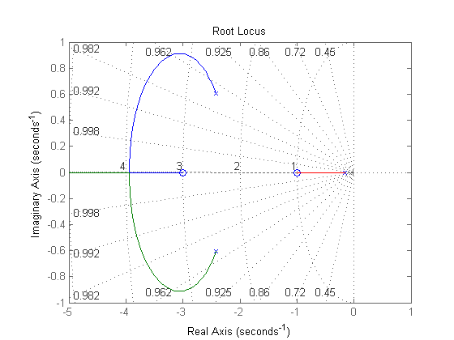

sobre
- Autor: Jonas Vieira de Souza
- Data: 30/09/2018
- Objetivo: Avaliar estabilidade de sistemas
Contents
configurações iniciais
...
close all;
clear;
clc;
verificar lugar da raízes
- fecha a malha entre G1(s) e G2(s)
- mostra a equação característica da FTMF
- plota o lugar das raízes
s = tf('s'); K = 1; % Ganho K G1 = (K*(s+1)) / (s*(s+2)); % G1(s) G2 = 1 / (s+3); % G2(s) % função transferência de malha fechada FTMF = feedback(G1,G2) [nums, dens] = tfdata(FTMF,'v'); % equação característica EC_FTMF = tf(dens,1) % lugar das raízes rlocus(FTMF.num,FTMF.den); axis([-5 1 -1 1]); grid on;
FTMF =
s^2 + 4 s + 3
---------------------
s^3 + 5 s^2 + 7 s + 1
Continuous-time transfer function.
EC_FTMF =
s^3 + 5 s^2 + 7 s + 1
Continuous-time transfer function.
